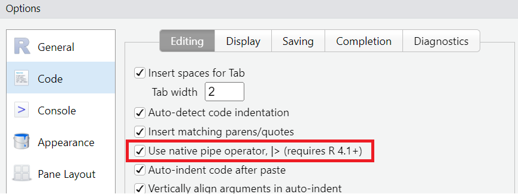

── Attaching core tidyverse packages ──────────────────────── tidyverse 2.0.0 ──
✔ dplyr 1.1.2 ✔ readr 2.1.4
✔ forcats 1.0.0 ✔ stringr 1.5.0
✔ ggplot2 3.4.2 ✔ tibble 3.2.1
✔ lubridate 1.9.2 ✔ tidyr 1.3.0
✔ purrr 1.0.2
── Conflicts ────────────────────────────────────────── tidyverse_conflicts() ──
✖ dplyr::filter() masks stats::filter()
✖ dplyr::lag() masks stats::lag()
ℹ Use the conflicted package (<http://conflicted.r-lib.org/>) to force all conflicts to become errorsIntroducción a Tidyverse
Metodología Cuantitativa - TSM301
Clase 3
Contenidos
I. Tidyverse
II. Operador pipe |>
III. Paquete dplyr
IV. Aplicación
V. Ejercicio
I. Tidyverse
Tidyverse (1)
El entorno tidyverse corresponde a una colección de paquetes de R cuyo diseño está enfocado en el análisis estadístico y la ciencia de datos. Todos los paquetes que forman parte comparten una filosofía de diseño que se traduce en una estructura y gramática común.
- Está diseñado para trabajar con datos ordenados:
- Cada observación es una fila.
- Cada variable es una columna.
- Cada celda es un solo valor.

Tidyverse (2)
- Código más legible, nombres de funciones más atingentes, gramática común.
“This is particularly important for R, because it’s a language that’s used primarily by non-programmers, and we want to make it as easy as possible for first-time and end-user programmers to learn the tidyverse.” – Equipo tidyverse.
Concatenación de código con el operador operador
|>.Ciclo completo del análisis de datos.

Tidyverse (3)
Cuando se instala tidyverse, se instalan una serie de paquetes. Aquellos que pertenecen al núcleo se cargan automáticamente cuando se ejecuta library(tidyverse).
-
tibble: nuevo formato de dataframes con mejoras de visualización. -
readr: lectura de datos “rectangulares” como formatos .csv, .tsv, etc. -
dplyr: funciones para el procesamiento y manipulación de datos. -
tidyr: funciones más avanzadas para el procesamiento de datos. -
string: funciones para trabajar con datos tipo string. -
forcats: funciones para trabajar con factores. -
ggplot2: visualización de datos. -
purrr: programación funcional, bucles, código eficiente.

Tidyverse (3)
Otros paquetes relevantes que se instalan, pero deben cargarse:
-
lubridate: trabajar con fechas. -
readxl: lectura de datos en formato Excel .xls y .xlsx. -
haven: lectura de datos de programas estadísticos en formato SPSS, Stata y SAS. -
glue: alternativa apaste()que facilita combinar datos y strings.
Más información disponible en la página oficial.
II. Operador pipe |>
Operador |> (1)
Expresa de manera clara una secuencia de operaciones concatenando instrucciones de código.
Pasa el elemento que está a la izquierda como argumento de la función que está a la derecha.
Disponible desde
R 4.1.0(mayo 2021). Antes se usaba -y todavía- el operador%>%.Se puede usar el atajo de teclado
CTRL/CMD + SHIFT + M. Requiere habilitarTools → Global Options → Code → Editing → “Use native pipe operator |>”

Operador |> (2)
Veamos un ejemplo usando el paquete “guaguas”:
# A tibble: 3 × 5
anio nombre sexo n proporcion
<dbl> <chr> <chr> <dbl> <dbl>
1 1920 María F 2130 0.104
2 1920 José M 984 0.0483
3 1920 Juan M 636 0.0312data |> head(n = 3)# A tibble: 3 × 5
anio nombre sexo n proporcion
<dbl> <chr> <chr> <dbl> <dbl>
1 1920 María F 2130 0.104
2 1920 José M 984 0.0483
3 1920 Juan M 636 0.0312Operador |> (3)
Usando las funciones de los paquetes que veremos en esta sesión, podemos comparar la sintaxis usando el operador |> versus la prioridad de paréntesis.
data |>
filter(anio == 2020) |>
slice_head(n = 3)# A tibble: 3 × 5
anio nombre sexo n proporcion
<dbl> <chr> <chr> <dbl> <dbl>
1 2020 Mateo M 3866 0.0198
2 2020 Agustín M 2535 0.0130
3 2020 Sofía F 2465 0.0126slice_head(filter(data, anio == 2020), n = 3)# A tibble: 3 × 5
anio nombre sexo n proporcion
<dbl> <chr> <chr> <dbl> <dbl>
1 2020 Mateo M 3866 0.0198
2 2020 Agustín M 2535 0.0130
3 2020 Sofía F 2465 0.0126Operador |> (4)
¿Qué código les parece más legible?
. . .
- Más legible: va de izquierda a derecha.
- Evita errores de prioridad de paréntesis.
- Menos sensible al número de operaciones.
III. Paquete dplyr
Paquete dplyr (1)
Contiene una serie de funciones para realizar tareas comunes en el procesamiento de datos:
- Explorar los datos:
glimpse(). - Seleccionar variables:
select(). - Filtrar observaciones:
filter(). - Renombrar variables:
rename(). - Ordenar los datos según criterios:
arrange(). - Cambiar orden de las columnas:
relocate(). - Seleccionar observaciones:
slice_head(),slice_tail(),slice_sample, etc.
Paquete dplyr (2)
- Añadir nuevas variables o modificar las existentes:
mutate(). - Agrupar datos:
group_by()o argumento.by. - Estadísticas agrupadas:
summarise(). - Contar:
count(). - Unir conjuntos de datos: familia de mutating y filtering
joins. - Condiciones lógicas:
if_else()ycase_when(). - Operaciones por filas:
rowwise(). - Identificar filas únicas/distintas:
distinct(). - Transformar a perdidos:
na_if(). - Aplicar operaciones a múltiples columnas:
across(). - ¡Muchas otras!
Función glimpse()
Permite obtener una vista rápida del conjunto de datos.
data |> glimpse()Rows: 858,782
Columns: 5
$ anio <dbl> 1920, 1920, 1920, 1920, 1920, 1920, 1920, 1920, 1920, 1920,…
$ nombre <chr> "María", "José", "Juan", "Luis", "Rosa", "Ana", "Manuel", "…
$ sexo <chr> "F", "M", "M", "M", "F", "F", "M", "F", "M", "M", "F", "F",…
$ n <dbl> 2130, 984, 636, 631, 426, 340, 326, 289, 277, 269, 239, 218…
$ proporcion <dbl> 0.10449885, 0.04827552, 0.03120247, 0.03095717, 0.02089977,…Función select() (1)
Permite seleccionar columnas de un conjunto de datos.
data |> select(anio, nombre, n) |> slice_head(n = 2)# A tibble: 2 × 3
anio nombre n
<dbl> <chr> <dbl>
1 1920 María 2130
2 1920 José 984- Anteponiendo el signo menos
-se puede hacer selección negativa.
data |> select(-proporcion, -sexo) |> slice_head(n = 2)# A tibble: 2 × 3
anio nombre n
<dbl> <chr> <dbl>
1 1920 María 2130
2 1920 José 984Función select() (2)
- También se puede hacer uso de
selection helperscomostarts_with(),ends_with(),contains(), etc.
# Selecciona todo lo que empieza con n
data |> select(starts_with("n")) |> slice_head(n = 2)# A tibble: 2 × 2
nombre n
<chr> <dbl>
1 María 2130
2 José 984# Selecciona todo lo que termine con o
data |> select(ends_with("o")) |> slice_head(n = 2)# A tibble: 2 × 2
anio sexo
<dbl> <chr>
1 1920 F
2 1920 M Función select() (2)
- O realizar una selección según el tipo de variable agregando el predicado
where().
# Selecciona todas las variables character
data |> select(where(is.character)) |> slice_head(n = 2)# A tibble: 2 × 2
nombre sexo
<chr> <chr>
1 María F
2 José M # Selecciona todas las variables numeric
data |> select(where(is.numeric)) |> slice_head(n = 2)# A tibble: 2 × 3
anio n proporcion
<dbl> <dbl> <dbl>
1 1920 2130 0.104
2 1920 984 0.0483- ¡Incluso permite renombrar variables! (Ver notas de la clase).
Más opciones se pueden revisar escribiendo en la consola de R ?select si se tiene cargado tidyverse.
Función rename()
Permite renombrar columnas siguiendo la estructura nuevo_nombre = antiguo_nombre.
# Renombra las variables
data |> rename(frec = n,
prop = proporcion)# A tibble: 858,782 × 5
anio nombre sexo frec prop
<dbl> <chr> <chr> <dbl> <dbl>
1 1920 María F 2130 0.104
2 1920 José M 984 0.0483
3 1920 Juan M 636 0.0312
4 1920 Luis M 631 0.0310
5 1920 Rosa F 426 0.0209
6 1920 Ana F 340 0.0167
7 1920 Manuel M 326 0.0160
8 1920 Olga F 289 0.0142
9 1920 Carlos M 277 0.0136
10 1920 Pedro M 269 0.0132
# ℹ 858,772 more rows- ¡Noten que aquí aún no se sobreescribe el objeto
data!
Función relocate()
Cambia la posición de las columnas.
# Va después de proporcion
data |> relocate(anio, .after = proporcion) |>
slice_tail(n = 4)# A tibble: 4 × 5
nombre sexo n proporcion anio
<chr> <chr> <dbl> <dbl> <dbl>
1 Zuri F 1 0.00000562 2021
2 Zurick F 1 0.00000562 2021
3 Zury F 1 0.00000562 2021
4 Zyhara F 1 0.00000562 2021# Va antes de proporcion
data |> relocate(anio, .before = proporcion) |>
slice_tail(n = 4)# A tibble: 4 × 5
nombre sexo n anio proporcion
<chr> <chr> <dbl> <dbl> <dbl>
1 Zuri F 1 2021 0.00000562
2 Zurick F 1 2021 0.00000562
3 Zury F 1 2021 0.00000562
4 Zyhara F 1 2021 0.00000562Función filter() (1)
Permite obtener un subconjunto de los datos a partir de las condiciones lógicas especificadas.
| Símbolo | Significado |
|---|---|
== |
Igualdad. No debe confundirse con “=”, que es un operador de asignación |
!= |
Distinto |
! |
Negación de una expresión lógica |
> |
Mayor que |
< |
Menor que |
>= |
Mayor o igual que |
<= |
Menor o igual que |
%in% |
Operador de R que indica un conjunto de elementos |
& |
Operador y. Todas las condiciones evaluadas deben ser verdaderas para que la expresión lo sea |
| |
Operador o. Al menos una condición debe ser verdadera para que la expresión lo sea |
Función filter() (2)
# Filtro por año
data |> filter(anio == 2021) # A tibble: 13,265 × 5
anio nombre sexo n proporcion
<dbl> <chr> <chr> <dbl> <dbl>
1 2021 Mateo M 3267 0.0184
2 2021 Emma F 2352 0.0132
3 2021 Sofía F 2251 0.0126
4 2021 Isabella F 2155 0.0121
5 2021 Lucas M 2054 0.0115
6 2021 Emilia F 2044 0.0115
7 2021 Agustín M 1972 0.0111
8 2021 Benjamín M 1935 0.0109
9 2021 Agustina F 1816 0.0102
10 2021 Santiago M 1809 0.0102
# ℹ 13,255 more rowsFunción filter() (3)
# Filtro por año y nombre
data |> filter(anio == 2021 & nombre == "Susana") # A tibble: 1 × 5
anio nombre sexo n proporcion
<dbl> <chr> <chr> <dbl> <dbl>
1 2021 Susana F 16 0.0000899Función filter() (4)
# Filtro usando |
data |> filter(anio == 2021 | anio == 2019) # A tibble: 28,306 × 5
anio nombre sexo n proporcion
<dbl> <chr> <chr> <dbl> <dbl>
1 2019 Mateo M 4152 0.0196
2 2019 Isabella F 3101 0.0147
3 2019 Agustina F 2932 0.0139
4 2019 Sofía F 2924 0.0138
5 2019 Agustín M 2869 0.0136
6 2019 Santiago M 2658 0.0126
7 2019 Emilia F 2596 0.0123
8 2019 Tomás M 2570 0.0122
9 2019 Benjamín M 2537 0.0120
10 2019 Lucas M 2468 0.0117
# ℹ 28,296 more rowsFunción filter() (5)
# A tibble: 71,792 × 5
anio nombre sexo n proporcion
<dbl> <chr> <chr> <dbl> <dbl>
1 1998 Javiera F 7473 0.0281
2 1998 Camila F 7266 0.0273
3 1998 Nicolás M 6090 0.0229
4 1998 María F 5665 0.0213
5 1998 Matías M 5591 0.0210
6 1998 Sebastián M 4726 0.0178
7 1998 Catalina F 4706 0.0177
8 1998 Diego M 4295 0.0161
9 1998 José M 4184 0.0157
10 1998 Francisca F 3872 0.0145
# ℹ 71,782 more rowsFunción filter() (6)
# A tibble: 2,026 × 5
anio nombre sexo n proporcion
<dbl> <chr> <chr> <dbl> <dbl>
1 1920 Juan M 636 0.0312
2 1920 Luis M 631 0.0310
3 1920 Rosa F 426 0.0209
4 1920 Ana F 340 0.0167
5 1920 Manuel M 326 0.0160
6 1920 Olga F 289 0.0142
7 1920 Carlos M 277 0.0136
8 1920 Pedro M 269 0.0132
9 1920 Juana F 239 0.0117
10 1920 Marta F 218 0.0107
# ℹ 2,016 more rowsFunción filter() (7)
data |> filter(proporcion >= 0.02 & anio > 2014)# A tibble: 3 × 5
anio nombre sexo n proporcion
<dbl> <chr> <chr> <dbl> <dbl>
1 2015 Agustín M 5355 0.0218
2 2017 Mateo M 4736 0.0216
3 2018 Mateo M 4468 0.0201Función filter() (8)
# Filtro usando el paquete stringr y condiciones en paréntesis
data |> filter(stringr::str_detect(nombre, "^X") & (anio >= 2018 & anio != 2021))# A tibble: 88 × 5
anio nombre sexo n proporcion
<dbl> <chr> <chr> <dbl> <dbl>
1 2018 Xiomara F 41 0.000184
2 2018 Ximena F 27 0.000121
3 2018 Xavier M 8 0.0000359
4 2018 Xin F 8 0.0000359
5 2018 Xander M 3 0.0000135
6 2018 Xavi M 2 0.00000898
7 2018 Xaviera F 2 0.00000898
8 2018 Xiang M 2 0.00000898
9 2018 Xabi M 1 0.00000449
10 2018 Xaschey F 1 0.00000449
# ℹ 78 more rowsFunción arrange() (1)
Permite ordenar los valores a partir de columnas. Por defecto será de manera ascendente.
data |> arrange(n)# A tibble: 858,782 × 5
anio nombre sexo n proporcion
<dbl> <chr> <chr> <dbl> <dbl>
1 1920 Aaron M 1 0.0000491
2 1920 Abdolina F 1 0.0000491
3 1920 Abdon M 1 0.0000491
4 1920 Abigail F 1 0.0000491
5 1920 Abrahan M 1 0.0000491
6 1920 Abrelena F 1 0.0000491
7 1920 Accidalia F 1 0.0000491
8 1920 Acencio M 1 0.0000491
9 1920 Adalia F 1 0.0000491
10 1920 Adelino M 1 0.0000491
# ℹ 858,772 more rowsFunción arrange() (2)
Con la función desc() se puede ordenar de manera descendente.
# Ordena por año ascendente y por frecuencia descendente
data |> filter(nombre %in% c("Andrea", "Alberto")) |>
arrange(anio, desc(n))# A tibble: 218 × 5
anio nombre sexo n proporcion
<dbl> <chr> <chr> <dbl> <dbl>
1 1920 Alberto M 53 0.00260
2 1920 Andrea F 8 0.000392
3 1921 Alberto M 130 0.00282
4 1921 Andrea F 19 0.000412
5 1922 Alberto M 121 0.00249
6 1922 Andrea F 19 0.000391
7 1923 Alberto M 168 0.00332
8 1923 Andrea F 14 0.000276
9 1924 Alberto M 137 0.00247
10 1924 Andrea F 25 0.000451
# ℹ 208 more rowsFunción slice() (1)
Permite seleccionar filas basadas en su posición.
data |> slice(20) # Selecciona la fila en la posición 20# A tibble: 1 × 5
anio nombre sexo n proporcion
<dbl> <chr> <chr> <dbl> <dbl>
1 1920 Margarita F 146 0.00716data |> slice(20:22) # Selecciona filas desde la 20 a 22# A tibble: 3 × 5
anio nombre sexo n proporcion
<dbl> <chr> <chr> <dbl> <dbl>
1 1920 Margarita F 146 0.00716
2 1920 Héctor M 138 0.00677
3 1920 Julio M 134 0.00657Función slice() (2)
data |> slice(-(1:800000)) # Selecciona todas menos desde la 1 a 800.000# A tibble: 58,782 × 5
anio nombre sexo n proporcion
<dbl> <chr> <chr> <dbl> <dbl>
1 2017 Widekenley M 1 0.00000456
2 2017 Wideleïca F 1 0.00000456
3 2017 Wideleyca F 1 0.00000456
4 2017 Widelini F 1 0.00000456
5 2017 Widelka F 1 0.00000456
6 2017 Widenaëlle F 1 0.00000456
7 2017 Widialine F 1 0.00000456
8 2017 Widjina F 1 0.00000456
9 2017 Widjinaïca F 1 0.00000456
10 2017 Widlanne F 1 0.00000456
# ℹ 58,772 more rowsFunción slice() (3)
También cuenta con las funciones slice_head() y slice_tail(). Además del argumento n, incluye el argumento prop para seleccionar una proporción de filas.
data |> slice_head(n = 2) # 2 Filas# A tibble: 2 × 5
anio nombre sexo n proporcion
<dbl> <chr> <chr> <dbl> <dbl>
1 1920 María F 2130 0.104
2 1920 José M 984 0.0483data |> slice_tail(prop = 0.01) # Partiendo desde las últimas filas, el 1%# A tibble: 8,587 × 5
anio nombre sexo n proporcion
<dbl> <chr> <chr> <dbl> <dbl>
1 2021 Amenadil M 1 0.00000562
2 2021 Amets F 1 0.00000562
3 2021 Ameyalin F 1 0.00000562
4 2021 Ameyalli F 1 0.00000562
5 2021 Amiel F 1 0.00000562
6 2021 Amien M 1 0.00000562
7 2021 Amillaray F 1 0.00000562
8 2021 Amin M 1 0.00000562
9 2021 Amina F 1 0.00000562
10 2021 Amirha F 1 0.00000562
# ℹ 8,577 more rowsFunción slice() (4)
Con slice_sample se puede seleccionar una muestra aleatoria de casos, ya sea indicando con el argumento n o con prop.
data |> slice_sample(n = 1) # Un caso al azar# A tibble: 1 × 5
anio nombre sexo n proporcion
<dbl> <chr> <chr> <dbl> <dbl>
1 1983 Mesly F 1 0.00000316data |> slice_sample(prop = 0.01) # Una muestra del 1% al azar# A tibble: 8,587 × 5
anio nombre sexo n proporcion
<dbl> <chr> <chr> <dbl> <dbl>
1 2005 Christopher M 141 0.000606
2 1992 Bethy F 1 0.00000338
3 2000 Alexzander M 1 0.00000394
4 1994 Ninorka F 1 0.00000345
5 1964 Anselmo M 67 0.000230
6 1992 Otohime F 1 0.00000338
7 2012 Jehaam M 1 0.0000041
8 2002 Elyne F 1 0.00000411
9 1948 Jaqueline F 2 0.0000113
10 1981 Gladys M 1 0.00000315
# ℹ 8,577 more rowsFunción count()
Cuenta las observaciones únicas en una o más variables. Por ejemplo, si quisieramos saber cuántos casos hay por año.
data |> count(anio)# A tibble: 102 × 2
anio n
<dbl> <int>
1 1920 2028
2 1921 3094
3 1922 3241
4 1923 3344
5 1924 3526
6 1925 3544
7 1926 3649
8 1927 3902
9 1928 4511
10 1929 4531
# ℹ 92 more rows
IV. Aplicación
Aplicación (1)
Aplicación (2)
¿Cómo han evolucionado los nombres María y Sofía a lo largo del tiempo?
Fuentes:
- Opción 1: paquete
showtext. - Opción 2: paquete
extrafont.
Para descargar una fuente específica pueden usar todas las de libre uso disponibles en Google Fonts.
if (!require(showtext)) install.packages("showtext")
if (!require(extrafont)) install.packages("extrafont")
library(showtext) # Paquete para llamar fuentes desde google
library(ggplot2) # Visualización de datos
library(extrafont) # Instala fuentes del sistema en R
font_add_google("Noto Sans")
font_add_google("Montserrat")# Importa todos los archivos .ttf de tu sistema
# Se ejecuta una vez, pero demora
font_import()
# Cargar todas las fuentes
loadfonts(device = "win", quiet = TRUE) # Método para WindowsAplicación (3)
data |> filter(nombre == "María" & sexo == "F") |>
ggplot(aes(x = anio, y = proporcion)) +
geom_line(size = 1, colour = "#0bb4ff") +
geom_area(alpha = 0.3, fill = "#0bb4ff") +
scale_x_continuous(breaks = seq(min(data$anio), max(data$anio), by = 10)) +
scale_y_continuous(labels = scales::percent) +
annotate("text", x = 2000, y = 0.05, size = 5,
label = "La proporción \n va a la baja", color = "black") +
labs(title = "Popularidad del nombre María entre 1920 - 2021", x = NULL, y = NULL,
caption = "Datos 1920 - 2021 según Registro Civil e Identificación.") +
theme(text = element_text(family = "Noto Sans"),
plot.title = element_text(color = "#0bb4ff", face = "bold"),
plot.caption = element_text(size = 8, face = "italic", color = "azure4"))
Aplicación (4)
data |> filter(nombre == "Sofía" & sexo == "F") |>
ggplot(aes(x = anio, y = proporcion)) +
geom_line(size = 1, colour = "#f46a9b") +
geom_area(alpha = 0.3, fill = "#f46a9b") +
scale_x_continuous(breaks = seq(min(data$anio), max(data$anio), by = 10)) +
scale_y_continuous(labels = scales::percent) +
labs(title = "Popularidad del nombre Sofía entre 1920 - 2021", x = NULL, y = NULL,
caption = "Datos 1920 - 2021 según Registro Civil e Identificación.") +
theme_classic() +
theme(text = element_text(family = "Montserrat"),
plot.title = element_text(color = "#f46a9b", face = "bold"),
plot.caption = element_text(size = 8, face = "italic", color = "azure4"))
V. Ejercicio
Ejercicio
Usando el conjunto de datos de guaguas responda lo siguiente:
- ¿Hay alguna persona que se llame “Nicki” o “Nicky”?
- ¿Cuáles son los tres nombres más populares para las personas inscritas en el año 2021?
- ¿Cuántas personas con el nombre “Pedro” fueron inscritas entre 2015 - 2017 y el año 2020?
- ¿Hay alguna persona que se llame “Ibai” antes de 2017?
- ¿Cuántas personas con nombre Andrea y sexo registral masculino hay en el conjunto de datos?
- Realice su propia búsqueda. Debe cumplir al menos uno de los siguientes requisitos:
- Incluir uno o más años y uno o más nombres.
- Realizar una búsqueda con criterio de exclusión.
¡Gracias!
https://sirojasv.github.io/tsm_web/